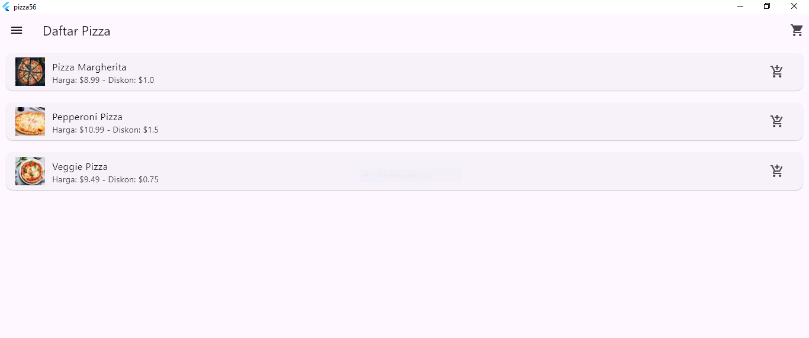
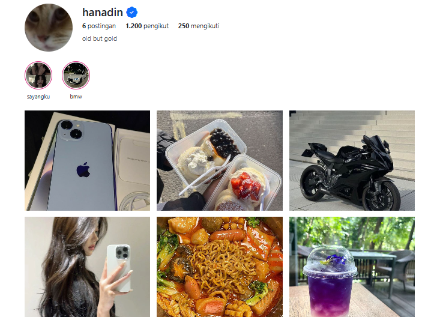
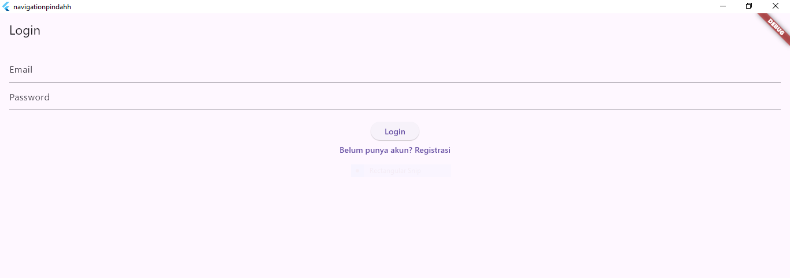
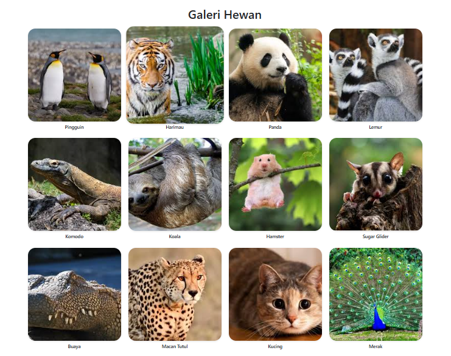

I am 18 years old, I am a student School, Internship in UI Design, Backend, Frontend
I am a student from SMKN 12 Malang seeking an Internship oppurnity to improve my skils in technology and progamming.
A responsive web-based pizza Ordering application that allows users to select pizza, custom toppings, and place an order. Built with HTML, CSS, and basic JavaScript. 
A web project that mimics the Instagram Profile editing interface. It allows users to simulate editing their profile picture, name, and bio. Built with HTML and CSS for demo purpoes.
A simple HTML and JavaScript project that demonstrates page navigation using buttons or menu links to simulate switching between sections. Great for demonstrating single-page transitions.
A static image gallery displaying 12 different photos in a responsive grid layout. Created with HTML and CSS to showcase visual arrangement and layout design.
Email: hanungadinugroho@gmail.com
GitHub github.com/hanungadin-ccc
Instagram: instagram.com/hanadinnnn